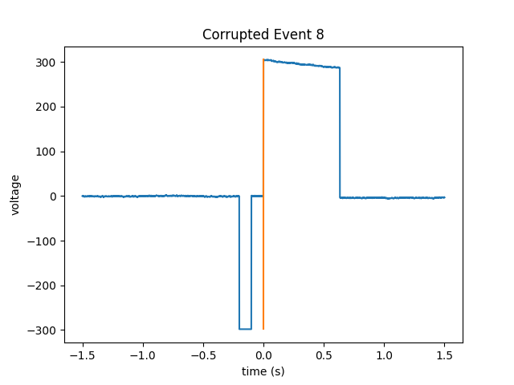
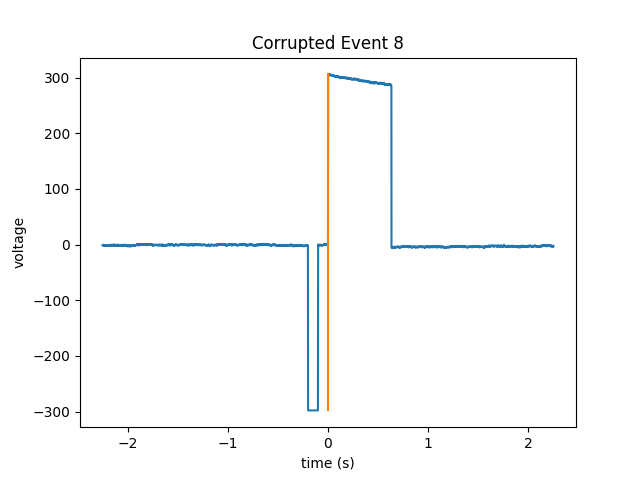
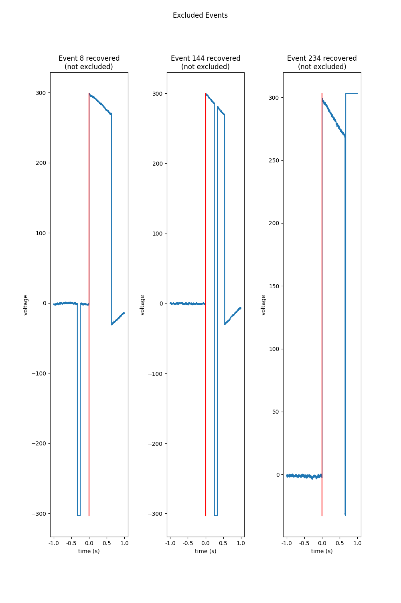
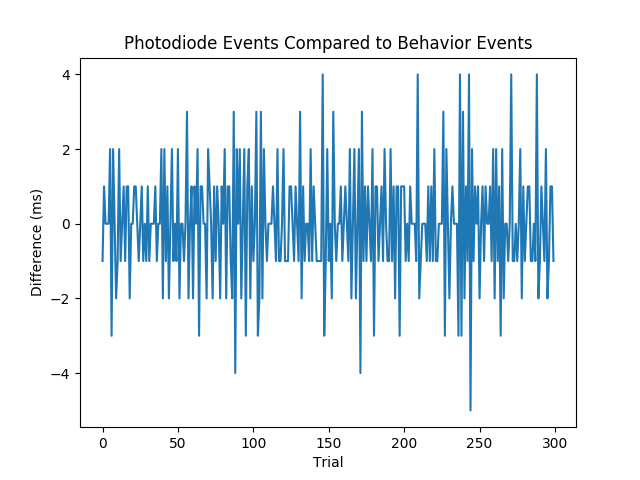
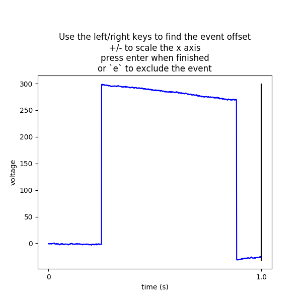
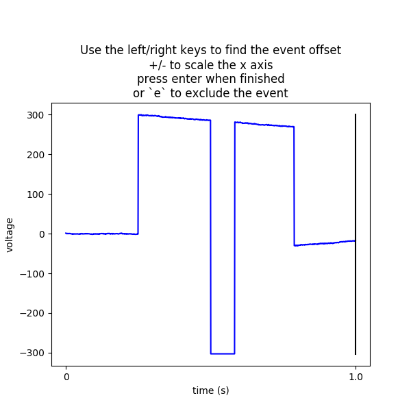
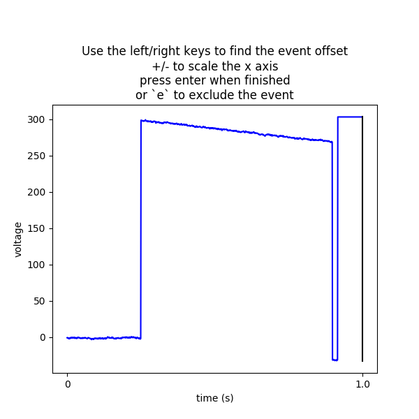
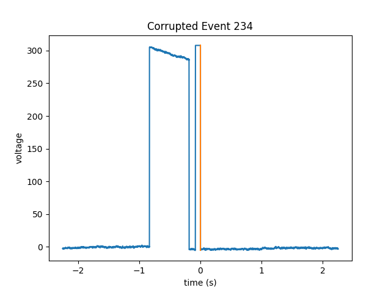

Note
Click here to download the full example code
Manually Recover Events Not Found by the Algorithm¶
In this example, we use pd-parser to find photodiode events that
have corrupted pre-event baselines, photodiode plateaus or post-event
baselines but not corrupted onsets or offsets.
Note that it might be a good idea not to recover these events
as there might be noise in the data around this time.
# Authors: Alex Rockhill <aprockhill@mailbox.org>
#
# License: BSD (3-clause)
Simulate data and use it to make a raw object
We’ll make an mne.io.Raw object so that we can save out some random data with a photodiode event channel in it in fif format (a commonly used electrophysiology data format).
import os.path as op
import numpy as np
import mock
import mne
from mne.utils import _TempDir
import pd_parser
from pd_parser.parse_pd import _load_data
import matplotlib.pyplot as plt
out_dir = _TempDir()
# simulate photodiode data
np.random.seed(29)
n_events = 300
# let's make our photodiode events on random uniform from 0.25 to 0.75 seconds
n_secs_on = np.random.random(n_events) * 0.5 + 0.25
raw, beh, events, _ = \
pd_parser.simulate_pd_data(n_events=n_events, n_secs_on=n_secs_on,
prop_corrupted=0.0)
sfreq = np.round(raw.info['sfreq']).astype(int)
# corrupt some events
corrupted_indices = [8, 144, 234]
amount = raw._data.max()
fig, axes = plt.subplots(1, len(corrupted_indices), figsize=(8, 4))
fig.suptitle('Corrupted Events')
axes[0].set_ylabel('voltage')
for j, i in enumerate(events[corrupted_indices, 0]):
if j == 0:
raw._data[0, i - sfreq // 5: i - sfreq // 10] = -amount
elif j == 1:
raw._data[0, i + sfreq // 4: i + sfreq // 3] = -amount
else:
raw._data[0, i + 3 * sfreq // 4: i + 5 * sfreq // 6] = amount
axes[j].plot(np.linspace(-1, 2, 3 * sfreq),
raw._data[0, i - sfreq: i + sfreq * 2])
axes[j].set_xlabel('time (s)')
# make figure nicer
fig.tight_layout()
# make fake electrophysiology data
info = mne.create_info(['ch1', 'ch2', 'ch3'], raw.info['sfreq'],
['seeg'] * 3)
raw2 = mne.io.RawArray(np.random.random((3, raw.times.size)) * 1e-6, info)
raw.add_channels([raw2])
raw.info['line_freq'] = 60 # for bids
# add some offsets to the behavior so it's a bit more realistic
offsets = np.random.randn(n_events) * 0.001
beh['time'] = np.array(beh['time']) + offsets
# save to disk as required by ``pd-parser``, raw needs to have a filename
fname = op.join(out_dir, 'sub-1_task-mytask_raw.fif')
raw.save(fname)
Creating RawArray with float64 data, n_channels=1, n_times=2039600
Range : 0 ... 2039599 = 0.000 ... 2039.599 secs
Ready.
Creating RawArray with float64 data, n_channels=3, n_times=2039600
Range : 0 ... 2039599 = 0.000 ... 2039.599 secs
Ready.
Writing /tmp/tmp_mne_tempdir__n31r5wk/sub-1_task-mytask_raw.fif
Closing /tmp/tmp_mne_tempdir__n31r5wk/sub-1_task-mytask_raw.fif
[done]
Find the photodiode events relative to the behavioral timing of interest
This function will use the default parameters to find and align the photodiode events, recovering the events that we just corrupted.
Note that the mock function mocks user input so when you run the example, you want to delete that line and unindent the next line, and then provide your own input depending on whether you want to keep the events or not.
with mock.patch('builtins.input', return_value='y'):
pd_parser.parse_pd(fname, pd_event_name='Stim On', beh=beh, max_len=1.5,
pd_ch_names=['pd'], beh_key='time', recover=True)
- 
- 

- 
- 
Reading in /tmp/tmp_mne_tempdir__n31r5wk/sub-1_task-mytask_raw.fif
Opening raw data file /tmp/tmp_mne_tempdir__n31r5wk/sub-1_task-mytask_raw.fif...
Range : 0 ... 2039599 = 0.000 ... 2039.599 secs
Ready.
Reading 0 ... 2039599 = 0.000 ... 2039.599 secs...
Finding photodiode events
0%| | 0/606 [00:00<?, ?it/s]
100%|##########| 606/606 [00:00<00:00, 7220.86it/s]
301 up-deflection photodiode candidate events found
Checking best alignments
0%| | 0/300 [00:00<?, ?it/s]
1%|1 | 4/300 [00:00<00:09, 30.15it/s]
3%|2 | 8/300 [00:00<00:09, 30.36it/s]
4%|4 | 12/300 [00:00<00:09, 30.12it/s]
5%|5 | 16/300 [00:00<00:09, 30.15it/s]
7%|6 | 20/300 [00:00<00:09, 30.11it/s]
8%|8 | 24/300 [00:00<00:09, 29.99it/s]
9%|9 | 28/300 [00:00<00:09, 30.08it/s]
11%|# | 32/300 [00:01<00:08, 29.96it/s]
12%|#1 | 35/300 [00:01<00:08, 29.88it/s]
13%|#3 | 39/300 [00:01<00:08, 30.04it/s]
14%|#4 | 43/300 [00:01<00:08, 29.74it/s]
16%|#5 | 47/300 [00:01<00:08, 29.79it/s]
17%|#6 | 50/300 [00:01<00:08, 29.67it/s]
18%|#7 | 53/300 [00:01<00:08, 29.67it/s]
19%|#8 | 56/300 [00:01<00:08, 29.70it/s]
20%|#9 | 59/300 [00:01<00:08, 29.49it/s]
21%|## | 62/300 [00:02<00:08, 29.60it/s]
22%|##1 | 65/300 [00:02<00:07, 29.67it/s]
23%|##2 | 68/300 [00:02<00:07, 29.69it/s]
24%|##3 | 71/300 [00:02<00:07, 29.75it/s]
25%|##4 | 74/300 [00:02<00:07, 28.62it/s]
26%|##5 | 77/300 [00:02<00:07, 28.75it/s]
27%|##6 | 80/300 [00:02<00:07, 28.88it/s]
28%|##7 | 83/300 [00:02<00:07, 29.09it/s]
29%|##8 | 86/300 [00:02<00:07, 28.73it/s]
30%|##9 | 89/300 [00:03<00:07, 28.93it/s]
31%|### | 92/300 [00:03<00:07, 29.09it/s]
32%|###1 | 95/300 [00:03<00:07, 28.32it/s]
33%|###2 | 98/300 [00:03<00:07, 28.62it/s]
34%|###3 | 101/300 [00:03<00:06, 28.54it/s]
35%|###4 | 104/300 [00:03<00:06, 28.83it/s]
36%|###5 | 107/300 [00:03<00:06, 28.95it/s]
37%|###6 | 110/300 [00:03<00:06, 28.94it/s]
38%|###7 | 113/300 [00:03<00:06, 27.29it/s]
39%|###8 | 116/300 [00:03<00:06, 27.65it/s]
40%|###9 | 119/300 [00:04<00:06, 28.18it/s]
41%|#### | 122/300 [00:04<00:06, 28.34it/s]
42%|####1 | 125/300 [00:04<00:06, 28.03it/s]
43%|####2 | 128/300 [00:04<00:06, 27.75it/s]
44%|####3 | 131/300 [00:04<00:06, 28.04it/s]
45%|####4 | 134/300 [00:04<00:05, 28.04it/s]
46%|####5 | 137/300 [00:04<00:05, 28.06it/s]
47%|####6 | 140/300 [00:04<00:05, 27.50it/s]
48%|####7 | 143/300 [00:04<00:05, 27.18it/s]
49%|####8 | 146/300 [00:05<00:06, 25.64it/s]
50%|####9 | 149/300 [00:05<00:05, 26.31it/s]
51%|##### | 152/300 [00:05<00:05, 26.54it/s]
52%|#####1 | 155/300 [00:05<00:05, 27.02it/s]
53%|#####2 | 158/300 [00:05<00:05, 27.13it/s]
54%|#####3 | 161/300 [00:05<00:05, 27.76it/s]
55%|#####4 | 164/300 [00:05<00:04, 27.96it/s]
56%|#####5 | 167/300 [00:05<00:04, 28.03it/s]
57%|#####6 | 170/300 [00:05<00:04, 28.21it/s]
58%|#####7 | 173/300 [00:06<00:04, 28.38it/s]
59%|#####8 | 176/300 [00:06<00:04, 28.24it/s]
60%|#####9 | 179/300 [00:06<00:04, 27.90it/s]
61%|###### | 182/300 [00:06<00:04, 27.38it/s]
62%|######1 | 185/300 [00:06<00:04, 27.53it/s]
63%|######2 | 188/300 [00:06<00:04, 27.46it/s]
64%|######3 | 191/300 [00:06<00:04, 27.16it/s]
65%|######4 | 194/300 [00:06<00:03, 27.19it/s]
66%|######5 | 197/300 [00:06<00:03, 27.32it/s]
67%|######6 | 200/300 [00:07<00:03, 27.50it/s]
68%|######7 | 203/300 [00:07<00:03, 27.46it/s]
69%|######8 | 206/300 [00:07<00:03, 27.59it/s]
70%|######9 | 209/300 [00:07<00:03, 26.52it/s]
71%|####### | 212/300 [00:07<00:03, 26.69it/s]
72%|#######1 | 215/300 [00:07<00:03, 27.06it/s]
73%|#######2 | 218/300 [00:07<00:03, 27.21it/s]
74%|#######3 | 221/300 [00:07<00:02, 27.85it/s]
75%|#######4 | 224/300 [00:07<00:02, 27.79it/s]
76%|#######5 | 227/300 [00:08<00:02, 27.43it/s]
77%|#######6 | 230/300 [00:08<00:02, 27.15it/s]
78%|#######7 | 233/300 [00:08<00:02, 26.88it/s]
79%|#######8 | 236/300 [00:08<00:02, 25.87it/s]
80%|#######9 | 239/300 [00:08<00:02, 26.01it/s]
81%|######## | 242/300 [00:08<00:02, 26.43it/s]
82%|########1 | 245/300 [00:08<00:02, 27.20it/s]
83%|########2 | 248/300 [00:08<00:01, 27.73it/s]
84%|########3 | 251/300 [00:08<00:01, 27.24it/s]
85%|########4 | 254/300 [00:09<00:01, 27.15it/s]
86%|########5 | 257/300 [00:09<00:01, 27.77it/s]
87%|########6 | 260/300 [00:09<00:01, 27.11it/s]
88%|########7 | 263/300 [00:09<00:01, 25.81it/s]
89%|########8 | 266/300 [00:09<00:01, 25.04it/s]
90%|########9 | 269/300 [00:09<00:01, 25.01it/s]
91%|######### | 272/300 [00:09<00:01, 24.98it/s]
92%|#########1| 275/300 [00:09<00:00, 25.19it/s]
93%|#########2| 278/300 [00:09<00:00, 25.02it/s]
94%|#########3| 281/300 [00:10<00:00, 26.03it/s]
95%|#########4| 284/300 [00:10<00:00, 26.45it/s]
96%|#########5| 287/300 [00:10<00:00, 26.39it/s]
97%|#########6| 290/300 [00:10<00:00, 26.40it/s]
98%|#########8| 294/300 [00:10<00:00, 27.81it/s]
99%|#########9| 297/300 [00:10<00:00, 28.33it/s]
100%|##########| 300/300 [00:10<00:00, 28.78it/s]
100%|##########| 300/300 [00:10<00:00, 27.91it/s]
Best alignment is with the first behavioral event shifted 0.00 s relative to the first synchronization event and has errors: min -3.82 ms, q1 -1.00 ms, med -0.02 ms, q3 0.89 ms, max 3.73 ms, 2 missed events
Excluding events that have zero close synchronization events or more than one synchronization event within `max_len` time
8 recovered (not excluded)
144 recovered (not excluded)
234 recovered (not excluded)
Find cessations of the photodiode deflections
Since we manually intervened for the onsets, on those same trials, we’ll have to manually intervene for the offsets.
On the documentation webpage, this is example is not interactive, but if you download it as a jupyter notebook and run it or copy the code into a console running python (ipython recommended), you can see how to interact with the window to accept or reject the recovered events by following the instructions.
# reject the two false deflections in the middle of the second event
with mock.patch('builtins.input', side_effect=['n'] * 2 + ['y'] * 2):
pd_parser.add_pd_off_events(fname, max_len=1.5, off_event_name='Stim Off')
- 
- 
- 
- 
Reading in /tmp/tmp_mne_tempdir__n31r5wk/sub-1_task-mytask_raw.fif
Opening raw data file /tmp/tmp_mne_tempdir__n31r5wk/sub-1_task-mytask_raw.fif...
Range : 0 ... 2039599 = 0.000 ... 2039.599 secs
Ready.
Reading 0 ... 2039599 = 0.000 ... 2039.599 secs...
Finding photodiode events
0%| | 0/606 [00:00<?, ?it/s]
100%|##########| 606/606 [00:00<00:00, 6930.14it/s]
301 up-deflection photodiode candidate events found
8 recovered but discarded
144 recovered (not excluded)
234 recovered (not excluded)
Overwriting existing file.
Check the results
Finally, we’ll check that the recovered events and the original events match.
annot = _load_data(fname)[0]
raw.set_annotations(annot)
events2, event_id = mne.events_from_annotations(raw)
on_events = events2[events2[:, 2] == event_id['Stim On']]
print(f'Original: {events[corrupted_indices, 0]}\n'
f'Recovered: {on_events[corrupted_indices, 0]}')
off_events = events2[events2[:, 2] == event_id['Stim Off']]
original_off = events[corrupted_indices, 0] + \
np.round(n_secs_on[corrupted_indices] * raw.info['sfreq']).astype(int)
print(f'Original off: {original_off}\n'
f'Recovered off: {off_events[corrupted_indices, 0]}')
Reading in /tmp/tmp_mne_tempdir__n31r5wk/sub-1_task-mytask_raw.fif
Opening raw data file /tmp/tmp_mne_tempdir__n31r5wk/sub-1_task-mytask_raw.fif...
Range : 0 ... 2039599 = 0.000 ... 2039.599 secs
Ready.
Used Annotations descriptions: ['Stim Off', 'Stim On']
Original: [ 65602 989660 1595483]
Recovered: [ 65601 989659 1595482]
Original off: [ 66236 990198 1596131]
Recovered off: [ 73495 997039 1603414]
Total running time of the script: ( 0 minutes 15.498 seconds)